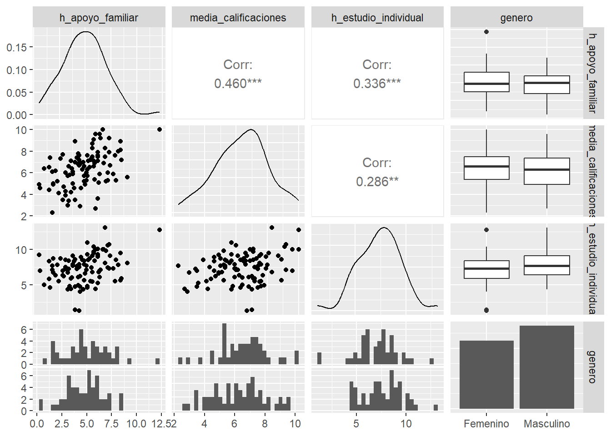

media <- c(5, 6.5, 7.5, 15)
covarianza <- matrix(c(4, 1, 1.5, 0.5,
1, 3, 1, 0.2,
1.5, 1, 5, 0.7,
0.5, 0.2, 0.7, 6),
nrow = 4, ncol = 4)¿El apoyo familiar influye a los resultados académicos?
20582 - Análisis de Datos para el GMAT
Enlace al repositorio de Github
Resumen
En este análisis se realizará un estudio multivariante a partir de datos recolectados de estudiantes. El objetivo es determinar si el nivel de apoyo que los estudiantes sienten en casa en relación con sus estudios tiene un impacto significativo en su desempeño académico. A través de técnicas estadísticas multivariantes, se analizarán diversas variables relacionadas con el entorno familiar y los resultados escolares para identificar posibles patrones que permitan entender mejor esta influencia.
Hipotesis y objetivos (Parte I)
La hipótesis a investigar es la siguiente: “Los estudiantes que reciben apoyo familiar habitualmente en sus estudios tienden a obtener mejores resultados académicos”. Esta hipótesis se basa en la idea de que el apoyo familiar, ya sea mediante ayuda con las tareas, motivación o seguimiento, podría tener un impacto positivo en el rendimiento académico del alumno, facilitando el aprendizaje y fortaleciendo la disciplina y la responsabilidad del estudiante.
Objetivo general
- Evaluar el impacto del apoyo familiar en el rendimiento académico de los estudiantes.
Objetivos secundários
Medir la percepción de los estudiantes sobre el apoyo que reciben en casa.
Cuantificar el rendimiento académico y ver si se relaciona con el apoyo familiar.
Considerar otros factores que puedan afectar el rendimiento académico.
Verificar si el rendimiento académico y el apoyo familiar cambian según el nivel educativo de los padres.
Creación y descripción de la base de datos (Parte II)
Las variables que usaremos para analizar nuestra hipotesis son las siguientes:
Variables nominales:
- Género, con niveles: Masculino y Femenino
- Tipo de escuela, con niveles: Pública y Privada
Variables ordinales:
- Nivel de apoyo familiar, con niveles: Bajo, Medio y Alto. Percepción própia del estudiante sobre el apoyo familiar que recibe.
- Motivación académica con niveles: Muy Baja, Baja, Media, Alta y Muy Alta.
- Nivel de interés en las materias con niveles: Muy Bajo, Bajo, Medio, Alto y Muy Alto. El grado de interés del estudiante en las asignaturas.
Variables cuantitativas:
- Horas de apoyo familiar, medida en horas por semana.
- Media de calificaciones, mediada en una escala de 1 a 10. Calificaciones del estudiante en el último semestre.
- Horas de estudio individual, medida en horas por semana.
- Tiempo de transporte diario, medida en minutos. Tiempo medio que el estudiante dedica al traslado a la escuela diariamente.
Simulación de los datos
Definimos las medias y matriz de covarianza para las variables cuantitativas. El vector de medias sigue el siguiente orden: media de horas de apoyo familiar, media de calificaciones, media de horas de estudio individual, media de minutos de transporte.
# Establecer una semilla para reproducibilidad
set.seed(42)
# Generar datos cuantitativos
datos_numericos <- mvrnorm(100, mu = media, Sigma = covarianza)
# Ajustar los valores de promedio de calificaciones a la escala de 1 a 10
datos_numericos[,2] <- pmin(pmax(round(datos_numericos[,2], 1), 1), 10)
# Crear la tabla de datos con las variables definidas
data_apoyo_familiar <- data.frame(
h_apoyo_familiar = round(datos_numericos[,1], 1),
media_calificaciones = datos_numericos[,2],
h_estudio_individual = round(datos_numericos[,3], 1),
tiempo_transporte = round(datos_numericos[,4]),
tipo_escuela = sample(c("Pública", "Privada"), 100, replace = TRUE),
genero = sample(c("Masculino", "Femenino"), 100, replace = TRUE),
nivel_apoyo_familiar = ordered(sample(1:3, 100, replace = TRUE), labels = c("Bajo", "Medio", "Alto")),
motivacion_academica = ordered(sample(1:5, 100, replace = TRUE), labels = c("Muy Baja", "Baja", "Media", "Alta", "Muy Alta")),
nivel_interes_materias = ordered(sample(1:5, 100, replace = TRUE), labels = c("Muy Bajo", "Bajo", "Medio", "Alto", "Muy Alto"))
)Mostramos las 6 primeras filas:
head(data_apoyo_familiar) h_apoyo_familiar media_calificaciones h_estudio_individual tiempo_transporte
1 1.9 5.0 8.7 11
2 7.4 6.7 9.1 14
3 5.2 6.3 4.6 16
4 8.5 7.2 5.9 11
5 2.3 5.2 7.8 16
6 3.8 6.1 9.1 15
tipo_escuela genero nivel_apoyo_familiar motivacion_academica
1 Privada Femenino Medio Baja
2 Privada Masculino Bajo Muy Alta
3 Privada Masculino Medio Media
4 Pública Masculino Bajo Muy Baja
5 Privada Femenino Medio Media
6 Privada Masculino Medio Muy Baja
nivel_interes_materias
1 Alto
2 Alto
3 Medio
4 Bajo
5 Muy Bajo
6 Muy BajoVamos a añadir dos variables más, extraidas del conjunto de datos Students_Performance.csv que podemos encontrar en el siguiente enlace.
students_data<-read.csv("Students_Performance.csv",
header=TRUE, sep=",")
subset_data <- students_data %>%
select(parental_level_of_education, lunch)
# Tomar una muestra aleatoria de 100 observaciones
set.seed(42) # Aseguramos reproducibilidad
sampled_data <- subset_data %>%
sample_n(100)Veamos que niveles tienen nuestras dos nuevas variables y su frecuencia:
sampled_data %>%
count(parental_level_of_education) parental_level_of_education n
1 associate's degree 22
2 bachelor's degree 13
3 high school 20
4 master's degree 6
5 some college 22
6 some high school 17Vamos a agrupar en solo dos clases:
sampled_data <- sampled_data %>%
mutate(Educacion_Padres = case_when(
parental_level_of_education %in% c("some high school", "high school") ~ "básicos",
parental_level_of_education %in% c("associate's degree", "bachelor's degree", "master's degree","some college") ~ "superiores"
))sampled_data %>%
count(lunch) lunch n
1 0 39
2 1 61Las nuevas variables son:
Educación Padres: Indica el nivel educativo de la familia del estudiante. Es una variable nominal con dos niveles: Estudios básicos y Estudios superiores.
Lunch: Muestra si los estudiantes reciben almuerzo lo cual es a menudo un indicador socioeconómico. Es una variable binària con dos valores 1, si si recibe y 0, si no recibe.
Finalmente, añadimos al conjunto de datos inicial nuestras dos nuevas variables:
# Crear un nuevo dataset con las columnas que quieres añadir
nuevas_columnas <- data.frame(
Lunch = sampled_data$lunch,
Educacion_Padres = sampled_data$Educacion_Padres
)
# Unir los datasets manteniendo los nombres de las columnas
data_apoyo_familiar <- bind_cols(data_apoyo_familiar, nuevas_columnas)
head(data_apoyo_familiar) h_apoyo_familiar media_calificaciones h_estudio_individual tiempo_transporte
1 1.9 5.0 8.7 11
2 7.4 6.7 9.1 14
3 5.2 6.3 4.6 16
4 8.5 7.2 5.9 11
5 2.3 5.2 7.8 16
6 3.8 6.1 9.1 15
tipo_escuela genero nivel_apoyo_familiar motivacion_academica
1 Privada Femenino Medio Baja
2 Privada Masculino Bajo Muy Alta
3 Privada Masculino Medio Media
4 Pública Masculino Bajo Muy Baja
5 Privada Femenino Medio Media
6 Privada Masculino Medio Muy Baja
nivel_interes_materias Lunch Educacion_Padres
1 Alto 1 superiores
2 Alto 0 básicos
3 Medio 0 básicos
4 Bajo 1 superiores
5 Muy Bajo 0 básicos
6 Muy Bajo 1 básicosAnálisis descriptivo (Parte III)
Para realizar el análisis descriptivo multivariante usaremos un ggpairs. Lo haremos solo de las variables que creemos que son más interesantes para alcanzar nuestros objetivos.
subset1_data_apoyo_familiar <- data_apoyo_familiar %>%
select(h_apoyo_familiar, media_calificaciones, h_estudio_individual, genero)
ggpairs(subset1_data_apoyo_familiar)`stat_bin()` using `bins = 30`. Pick better value with `binwidth`.
`stat_bin()` using `bins = 30`. Pick better value with `binwidth`.
`stat_bin()` using `bins = 30`. Pick better value with `binwidth`.
Analizemos el siguiente gráfico de dispersión que nos permite examinar visualmente las relaciones entre varias variables numéricas y categóricas relacionadas con el apoyo familiar y el rendimiento académico.
En la Diagonal principal están las distribuciones individuales (histogramas y curvas de densidad) de cada variable numérica:
h_apoyo_familiar: Distribución ligeramente sesgada a la izquierda, indicando que la mayoría de los valores de apoyo familiar están concentrados entre 4 y 8 horas.
media_calificaciones: Distribución aproximadamente normal con una media en torno a \(7\), aunque ligeramente sesgada hacia la derecha.
h_estudio_individual: Distribución aproximadamente normal con una media en torno a \(7.5\).
género: histograma donde vemos que hay una ligera predominancia de estudiantes masculinos.
Veamos ahora las relaciones entre variables cuantitativas:
h_apoyo_familiar y media_calificaciones: La celda muestra un valor de correlación de 0.460, lo cual indica una correlación positiva. Esto sugiere que los estudiantes que reciben más horas de apoyo familiar tienden a tener mejores calificaciones en promedio. La nube de puntos en esta celda refuerza esta relación: se observa una tendencia ascendente entre horas de apoyo familiar y calificaciones.
h_apoyo_familiar y h_estudio_individual: La correlación es de 0.336, mostrando una correlación positiva. Esto sugiere que los estudiantes que reciben más apoyo familiar también tienden a dedicar más horas al estudio individual. La nube de puntos refleja una tendencia ascendente ligera entre el apoyo familiar y el tiempo de estudio individual.
media_calificaciones y h_estudio_individual: La correlación entre estas variables es 0.286, indicando una correlación positiva aunque más baja que las anteriores. Esto sugiere que los estudiantes que dedican más horas al estudio individual tienden a obtener calificaciones ligeramente más altas. La nube de puntos es más dispersa, pero hay una ligera tendencia positiva.
Aunque no sea el objetivo principal del anàlisis veamos por encima las diferéncias por sexo:
Relación entre las variables cuantitativas y género
Los boxplots muestran que tanto hombres como mujeres reciben niveles de apoyo familiar similares. No hay una diferencia significativa en la mediana ni en la distribución general. De la misma manera, los boxplots de calificaciones y de horas de estudio individual también son similares entre géneros.
Interpretación global en relación con el objetivo La correlación positiva respalda la hipótesis de que mayores niveles de apoyo familiar pueden influir positivamente en los resultados académicos de los estudiantes. Además la correlación positiva entre el apoyo familiar y el tiempo de estudio individual sugiere que los estudiantes con más apoyo familiar no solo tienen mejores calificaciones, sino que también están más motivados.
Veamos ahora solo para las variables cuantitativas, que varianza generalizada y varianza total tienen.
subset2_data_apoyo_familiar <- data_apoyo_familiar %>%
select(h_apoyo_familiar, media_calificaciones, h_estudio_individual, tiempo_transporte)Las definiciones de varianza generalizada y variación total són las siguientes,repectivamente:
\[|S| = \prod_i^p \lambda_i\] \[Tr(S)= \sum_i^p \lambda_i\] donde los \(\lambda_i\) són los valores propios de la matriz de covarianzas \(S\). Saquemos los valores propios de \(S\):
S = cov(subset2_data_apoyo_familiar)
valores_propios <- eigen(S)$values
valores_propios[1] 8.094996 4.617015 2.946894 1.783450Por tanto, la varianza generalizada es:
prod(valores_propios)[1] 196.4279Y, la variación total:
sum(valores_propios)[1] 17.44235La variación total representa la dispersión individual de las variables. Es decir, mide cuánto varía cada variable sin considerar las relaciones entre ellas(ignora las covarianzas). Mientras que la varianza generalizada mide la variabilidad conjunta de las variables, es decir, cuánto varían las variables juntas. En este caso, la varianza generalizada es \(196.4\) y la variación total \(17.4\). Esto indica que las cuatro variables tienen una cantidad poco significativa de variación individual(como refleja la variación total), aunque hay una gran dispersión conjunta. Esto indica que no hay redundancia entre las variables.
Aplicación de pruebas estadísticas
Modelizar la variable nivel_apoyo_familiar (Parte IV)
Primero, necesitamos calcular las probabilidades de que un estudiante pertenezca a cada una de las categorías del nivel de apoyo familiar percibido por el alumno
probabilidades_apoyo_familiar <- prop.table(table(data_apoyo_familiar$nivel_apoyo_familiar))
probabilidades_apoyo_familiar
Bajo Medio Alto
0.33 0.34 0.33 Ahora que tenemos las probabilidades de las categorías, podemos modelar la variable nivel_apoyo_familiar usando una distribución multinomial. Calculemos la probabilidad de que, en una muestra de tamaño 20, al menos 10 estudiantes tengan un alto nivel de apoyo familiar (categoría “Alto”). Podemos realizar una simulación para obtener la probabilidad de que ocurra este evento.
pb <- probabilidades_apoyo_familiar["Bajo"]
pm <- probabilidades_apoyo_familiar["Medio"]
pa <- probabilidades_apoyo_familiar["Alto"]
set.seed(42)
simulaciones_apoyo <- rmultinom(10000, size = 20, prob = c(pb, pm, pa))
evento_interes_apoyo <- sum(simulaciones_apoyo[3, ] >= 10)
probabilidad_evento_apoyo <- evento_interes_apoyo / 10000
probabilidad_evento_apoyo[1] 0.0856Una probabilidad de 0.0856 indica que solo en el 8.56% de las muestras de 20 estudiantes se observa que al menos 10 tienen un alto nivel de apoyo familiar, lo que sugiere que este nivel de apoyo no es común en la población estudiada. Esto implica que un alto apoyo familiar podría no ser la norma, afectando su impacto en el rendimiento académico.
Modelo de regresión multivariante para media_calificaciones Parte(V)
Veamos las 6 primeras filas de la tabla de variables cuantitativas:
head(subset2_data_apoyo_familiar) h_apoyo_familiar media_calificaciones h_estudio_individual tiempo_transporte
1 1.9 5.0 8.7 11
2 7.4 6.7 9.1 14
3 5.2 6.3 4.6 16
4 8.5 7.2 5.9 11
5 2.3 5.2 7.8 16
6 3.8 6.1 9.1 15Queremos explicar la variable media_calificaciones a partir de las otras tres. Consideremos que queremos estimar los parámetros \(\beta_0, \beta_1,\beta_2\) y \(\beta_3\) del modelo de regresión lineal múltiple:
\[Y = \beta_0 + \beta_1 X_1 + \beta_2 X_2 \beta_3 X_3 + \epsilon,\]
donde \(Y\) representa la media en las calificaciones, \(X_1\) las horas de apoyo familiar, \(X_2\) las horas de estudio individual, \(X_3\) el tiempo de transporte , y \(\epsilon\) es el término de error.
Dado que estamos interesados en estimar los parámetros \(\beta = (\beta_0, \beta_1, \beta_2, \beta_3)\), necesitamos derivar la función de verosimilitud en términos de estos parámetros y luego obtener la función de score tomando la derivada de la log-verosimilitud con respecto a $ $.
Podemos escribir el modelo en forma matricial como:
\[Y = X \beta + \epsilon,\]
donde:
\(Y\) es el vector de media de calificaciones
\(X\) es la matriz de las otras tres variables con una columna de una añadida al principio
\[\beta = \begin{pmatrix} \beta_0 \\ \beta_1 \\ \beta_2 \\ \beta_3 \end{pmatrix},\]
\[\epsilon \sim \mathcal{N}(0, \sigma^2 I)\] es el vector de términos de error, que sigue una distribución normal con media cero y varianza $ ^2 $.
Dado que el término de error \(\epsilon\) sigue una distribución normal, el vector \(Y\) también sigue una distribución normal, con media \(X \beta\) y varianza \(\sigma^2 I\):
\[Y \sim \mathcal{N}(X \beta, \sigma^2 I).\] Hagamos el modelo de regresión multivariante:
modelo_regresion <- lm(media_calificaciones ~ h_apoyo_familiar + h_estudio_individual +tiempo_transporte , data = subset2_data_apoyo_familiar)
# Ver los resultados del modelo
summary(modelo_regresion)
Call:
lm(formula = media_calificaciones ~ h_apoyo_familiar + h_estudio_individual +
tiempo_transporte, data = subset2_data_apoyo_familiar)
Residuals:
Min 1Q Median 3Q Max
-3.5374 -1.0679 0.0983 1.0578 2.8763
Coefficients:
Estimate Std. Error t value Pr(>|t|)
(Intercept) 3.18727 0.98743 3.228 0.00171 **
h_apoyo_familiar 0.32655 0.07772 4.202 5.93e-05 ***
h_estudio_individual 0.10831 0.07823 1.385 0.16941
tiempo_transporte 0.05119 0.06290 0.814 0.41778
---
Signif. codes: 0 '***' 0.001 '**' 0.01 '*' 0.05 '.' 0.1 ' ' 1
Residual standard error: 1.49 on 96 degrees of freedom
Multiple R-squared: 0.2367, Adjusted R-squared: 0.2129
F-statistic: 9.925 on 3 and 96 DF, p-value: 9.242e-06Analizemos los resultados dados:
\(\beta_0\): El intercepto és \(3.18\) que es el valor de cuando todas las variables independientes son 0.
\(\beta_1 = 0.33\) : Por cada hora apoyo familiar adicional de estudio, el rendimiento académico aumenta en 0.33 puntos. Esto sugiere que existe una relación positiva entre el apoyo familiar y el rendimiento académico.
\(\beta_2 = 0.11\) Cada hora adicional de estudio individual está asociada con un aumento de 0.11 puntos en el rendimiento académico. Aunque esta relación también es positiva, su impacto es menor que el de las horas de apoyo familiar.
\(\beta_3 = 0.05\): El coeficiente es positivo, lo que sugiere que más tiempo de traslado está asociado con una mejora en el rendimiento académico, lo cual es un poco contraintuitivo. Aunque como el valor es tan pequeño, probablemente no tenga un impacto significativo en el rendimiento académico.
Vemos por los p-valores que la variable que tiene un efecto más significativo sobre media_calificaciones es h_apoyo_familiar con un valor \(p = 5.93\cdot10^{-5}\). Las otras dos no tienen valor significativo.
El valor de \(R^2\) de 0.2367 indica que el modelo explica solo el 23.67% de la variabilidad del rendimiento académico a partir de las variables independientes consideradas. Esto implica que gran parte de la variabilidad del rendimiento académico no está siendo explicada por las variables del modelo. Esto sugiere que podría ser útil incluir más variables en el modelo
En resumen, aunque las 3 variables están relacionadas con el rendimiento académico, la capacidad del modelo para predecir dicho rendimiento es limitada.
Por otro lado, la función de score en términos de \[\beta\] es:
\[ Score(\beta) = \frac{1}{\sigma^2} X^T (Y - X \beta). \]
Veamos si esta es o no 0.
X <- subset2_data_apoyo_familiar %>%
select(h_apoyo_familiar, h_estudio_individual, tiempo_transporte)
X <- as.matrix(X)
columna_unos <- rep(1, nrow(X))
X <- cbind(columna_unos, X)
B <- c(3.18,0.33,0.11,0.05)
set.seed(123)
e <- rnorm(100, mean = 0, sd = 1)
Y <- X %*% B + e
Score_sin_sigma = t(X) %*% (Y - X %*% B)
Score_sin_sigma [,1]
columna_unos 9.040591
h_apoyo_familiar 49.232769
h_estudio_individual 58.854255
tiempo_transporte 157.740319Como la función de score es diferente de cero, indica que al cambiar los valores de \(\beta\), podríamos encontrar un ajuste de mayor verosimilitud para el modelo.
Este ajuste es fundamental para modelar y entender el efecto de cada factor en el rendimiento academico, lo cual podría ayudar a dar recomendaciones a las familias para ayudar al rendimiento académico de sus hijos.
Contraste de hipótesis (Parte VI)
El objetivo de esta sección es comparar las medias de dos grupos en varias variables a la vez. En nuestro caso, los dos grupos estarán divididos según el nivel de estudios de los padres. Las variables que vamos a analizar en estos dos grupos son el nivel de apoyo familiar y el promedio de calificaciones. Definamos todo lo necesario para llevar a cabo este análisis:
X1 <- data_apoyo_familiar %>%
filter(Educacion_Padres == "superiores") %>%
select(h_apoyo_familiar, media_calificaciones)
X2 <- data_apoyo_familiar %>%
filter(Educacion_Padres == "básicos") %>%
select(h_apoyo_familiar, media_calificaciones)Entonces tenemos que el grupo de alumnos con padres con estudios superiores tiene 63 observaciones y el otro 37.
Definamos los vectores de medias y las matrices de covarianzas:
x1 <- colMeans(X1)
x2 <- colMeans(X2)
S1 <- cov(X1)
S2 <- cov(X2)Estimación centrada de la matriz de covarianzas común y su inversa:
S_tilde = (63*S1 + 37*S2)/100
inv_S_tilde = solve(S_tilde)Distancia de mahalanobis entre las dos muestras:
D <- t(x1-x2) %*% inv_S_tilde %*% (x1-x2)
D [,1]
[1,] 0.2124902Estadístico F:
n1=63
n2=37
p=2
Est_F = ((n1 +n2 -1 -p)/((n1+n2-2)*(p)))*((n1*n2)/(n1+n2))*D
F_2_97 = qf(0.99, df1 = 97, df2 = 2)
p_valor = 1 - pf(Est_F,97,2)
p_valor [,1]
[1,] 0.3338499Utilizando el test de hotelling:
r=hotelling.test(X1,X2)
rTest stat: 4.9514
Numerator df: 2
Denominator df: 97
P-value: 0.09158 Dado que en los dos casos el p-valor es major a \(0.05\) no existe evidencia suficiente para rechazar \(H_0\). Esto significa que las medias de los dos grupos son iguales.
Conclusiones o recomendaciones (Parte VII)
Los hallazgos obtenidos son: En la sección 4, observamos que la mayoría de los alumnos perciben que no reciben suficiente apoyo en casa. En la sección 3, encontramos una correlación positiva entre el apoyo familiar y los resultados académicos, y también se identificó que factores como el género y las horas de estudio individual pueden influir en el rendimiento académico, aunque en menos grado. Finalmente, en la sección 6, concluimos que no hay evidencia suficiente para rechazar que las medias de rendimiento académico y el apoyo familiar sean iguales entre los alumnos cuyos padres tienen estudios superiores o básicos. En conclusión, nuestros resultados indican que el apoyo familiar tiene una influencia significativa en el rendimiento académico de los alumnos. Sin embargo, esta influencia no parece estar relacionada con el nivel de formación académica de los padres.
Bibliografia
- Data Kaggle
- Aprender R - UIB
- “Nuevos Métodos de Análisis Multivariante” de Carles M. Cuadras